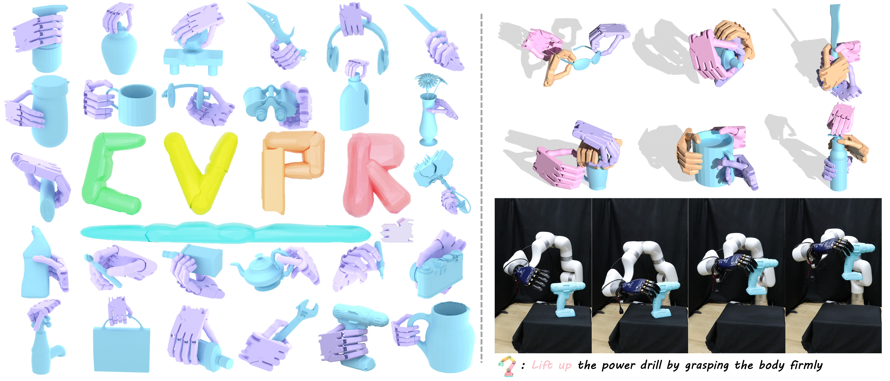
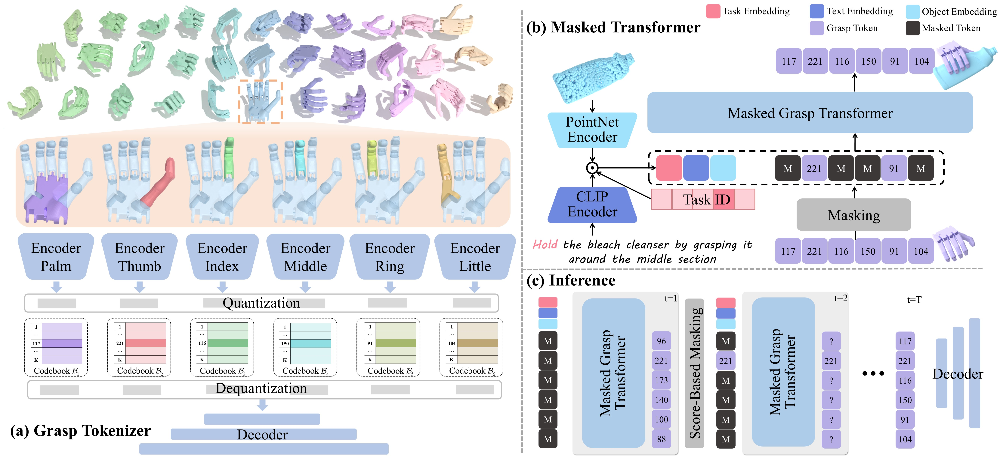

Southeast University, China
* corresponding author
Dexterous grasp generation is a predominant task that enables robots to perform human-level manipulation. However, a dexterous hand always maintains high-dimensional DoF and actuation space, making existing approaches that rely on holistic latent representations difficult to produce high-quality and semantically aligned grasps. In this paper, we propose MaskDexGrasp to address these challenges. We first present a part-aware grasp tokenizer that decomposes dexterous grasps into discrete tokens, facilitating compositional modeling of anatomical dependencies. Building upon this representation, a bidirectional masked grasp transformer is then developed to predict grasp tokens conditioned on object geometry and task description, ensuring coherent grasp generation while allowing fine-grained part-level editing. To facilitate evaluation, we construct a dexterous grasp dataset that comprises 65K grasping instances and 260K richly annotated descriptions covering 11 tasks. Comprehensive experiments demonstrate that our method achieves the state-of-the-art performance. Our code and dataset will be released upon acceptance.

(a) Grasp Tokenizer encodes the raw poses into discrete grasp tokens via part-aware VQ-VAE models, which consist of six codebooks (one palm and five fingers). (b) Masked Transformer adopts a bidirectional autoregressive manner to learn the probabilistic distributions of these tokens, conditioned on the object geometry and textual description. (c) During Inference, the masked transformer progressively and iteratively predicts multiple tokens with high scores from an empty canvas.
